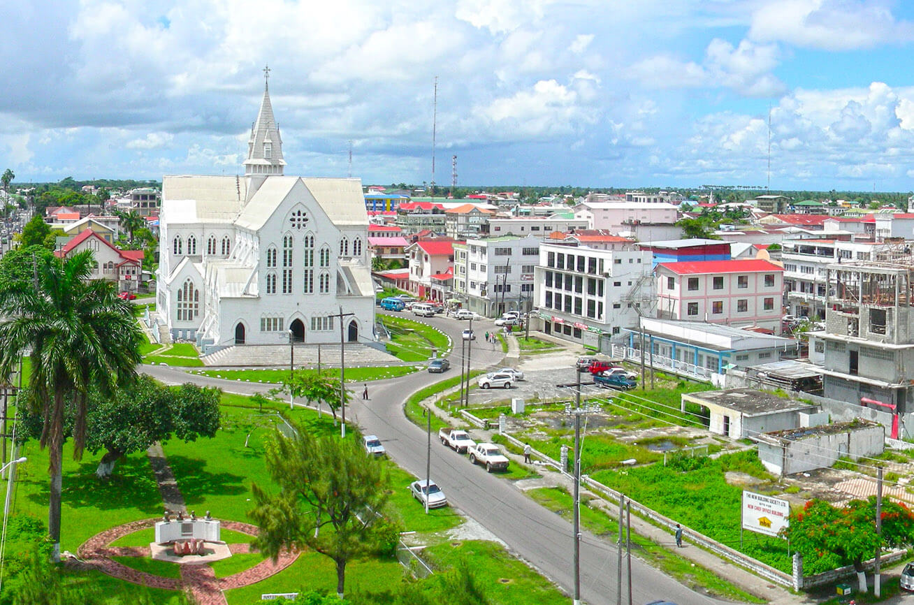

 En la actualidad, Guyana es un país en desarrollo con una economía en crecimiento impulsada por la explotación de sus recursos naturales, principalmente el petróleo. Desde el descubrimiento de grandes reservas de petróleo en 2015, Guyana ha estado experimentando un auge económico y se espera que su PIB crezca significativamente en los próximos años. Sin embargo, el crecimiento económico ha planteado desafíos en términos de gestión de los ingresos petroleros, la protección del medio ambiente y la distribución equitativa de los beneficios. El gobierno ha establecido un fondo soberano para administrar los ingresos petroleros y ha tomado medidas para fortalecer la regulación ambiental y social de la industria petrolera. En el ámbito político, Guyana ha estado experimentando una transición pacífica del poder después de las elecciones generales de 2020, que fueron inicialmente cuestionadas por acusaciones de fraude electoral. Después de un largo proceso de verificación y recuento de votos, la Comisión Electoral declaró al opositor Partido Progresista del Pueblo (PPP) como ganador. El nuevo gobierno liderado por el presidente Irfaan Ali ha prometido trabajar en la unidad nacional y abordar los desafíos económicos, sociales y ambientales del país. En cuanto a los desafíos sociales, Guyana ha estado trabajando para abordar la pobreza, la desigualdad y la exclusión social, especialmente entre las comunidades indígenas y afro-guyanesas. También ha habido un enfoque en la mejora de la educación y la atención médica, así como en la promoción de la igualdad de género y la protección de los derechos de las mujeres y las niñas. En resumen, Guyana sigue enfrentando desafíos en términos de gestión de los recursos naturales, consolidación democrática y desarrollo social y económico. Sin embargo, el país está trabajando para abordar estos desafíos y avanzar hacia un futuro más próspero y sostenible. Además de los desafíos mencionados, Guyana también ha estado trabajando para mejorar su infraestructura y atraer inversión extranjera en áreas como el turismo y la agricultura. El país ha visto un aumento en la construcción de carreteras, puentes y aeropuertos, lo que ha mejorado la conectividad y la accesibilidad. En el ámbito ambiental, Guyana es uno de los países más boscosos del mundo, y su gobierno ha estado trabajando para proteger sus recursos naturales y promover la conservación. El país ha establecido un programa de "Bosques Verdes" que busca reducir la deforestación y promover prácticas sostenibles en la industria maderera y otros sectores. En cuanto a la salud pública, Guyana ha estado lidiando con la pandemia de COVID-19, que ha afectado a su economía y su sistema de salud. El país ha implementado medidas de distanciamiento social y ha estado trabajando en la adquisición de vacunas para proteger a su población. Por último, Guyana ha estado trabajando en su relación con sus países vecinos, incluyendo Venezuela y Surinam. En el caso de Venezuela, el gobierno de Guyana ha estado trabajando con la ONU para resolver la disputa territorial. Con Surinam, ambos países han estado trabajando en la cooperación en áreas como la seguridad fronteriza y la gestión de recursos compartidos. En general, Guyana sigue enfrentando desafíos, pero ha estado trabajando para abordarlos de manera efectiva. Con una economía en crecimiento, una democracia consolidada y un enfoque en la protección ambiental y el desarrollo sostenible, el país está bien posicionado para avanzar hacia un futuro más próspero y equitativo.